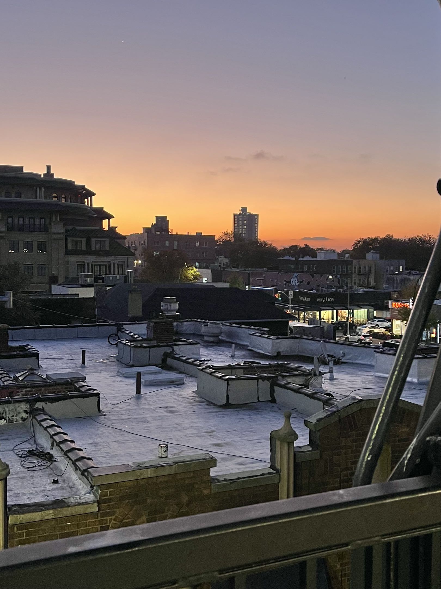

I took this photo while waiting for the train because I thought the sky looked pretty at the time. I decided to use this for the assignment because there are a lot of angles and shapes crossing into each other. The architecture also made it simple to visualize the 3d form of the building. There was also a lot of separation between the buildings, and you can see the foreground in comparison to the background. I used different colors and layered them upon each other to create a solid form. I especially used this method on the rooftop of the building to show which axis the planes are facing.